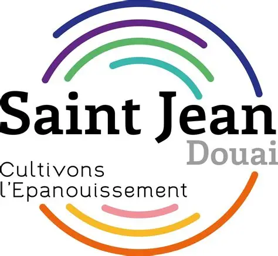
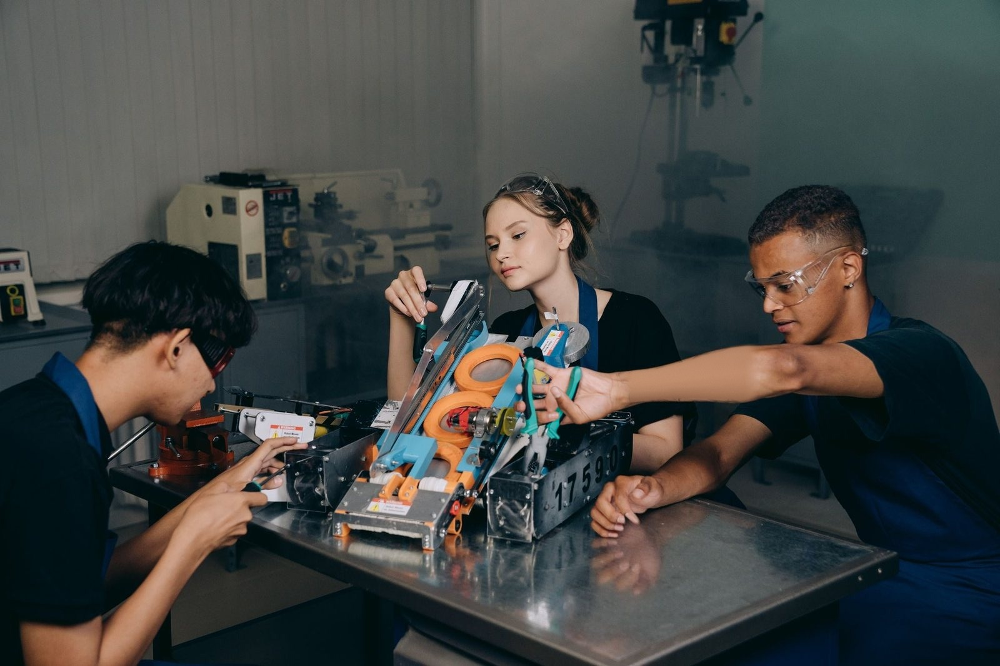
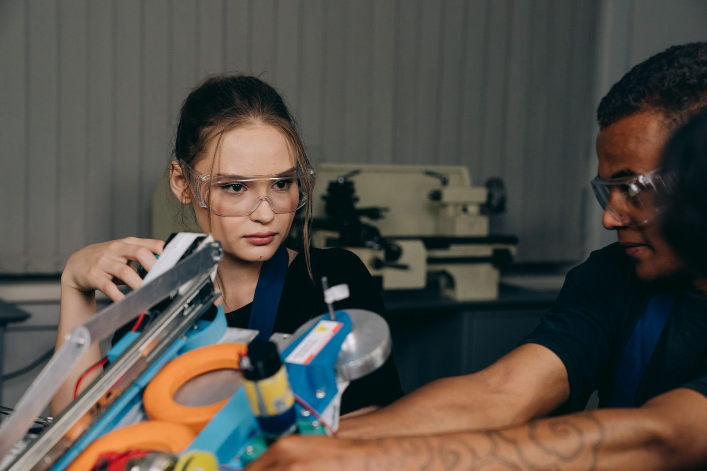
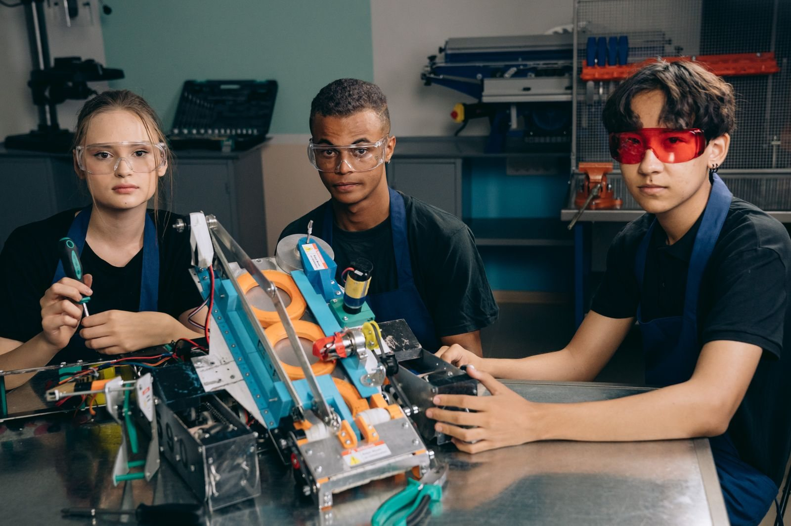
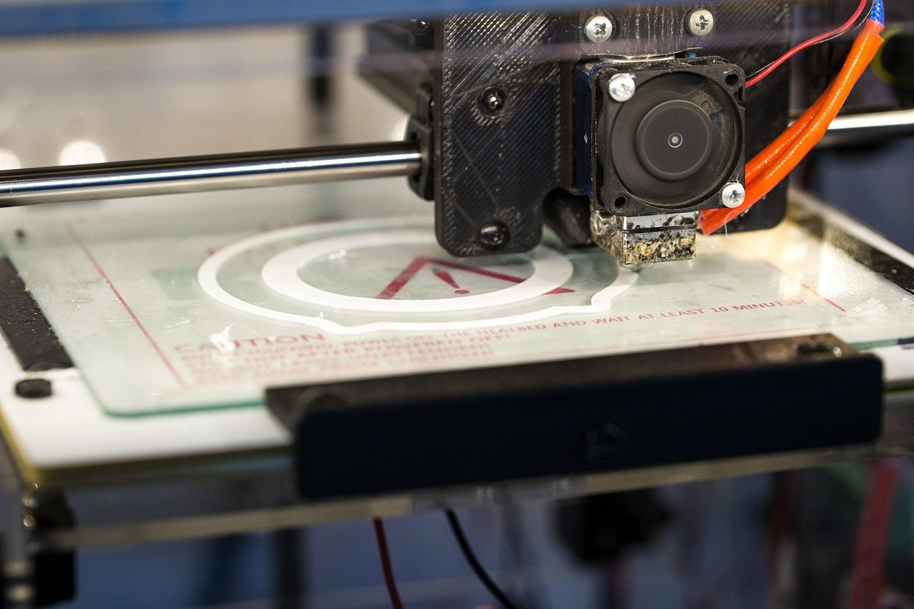
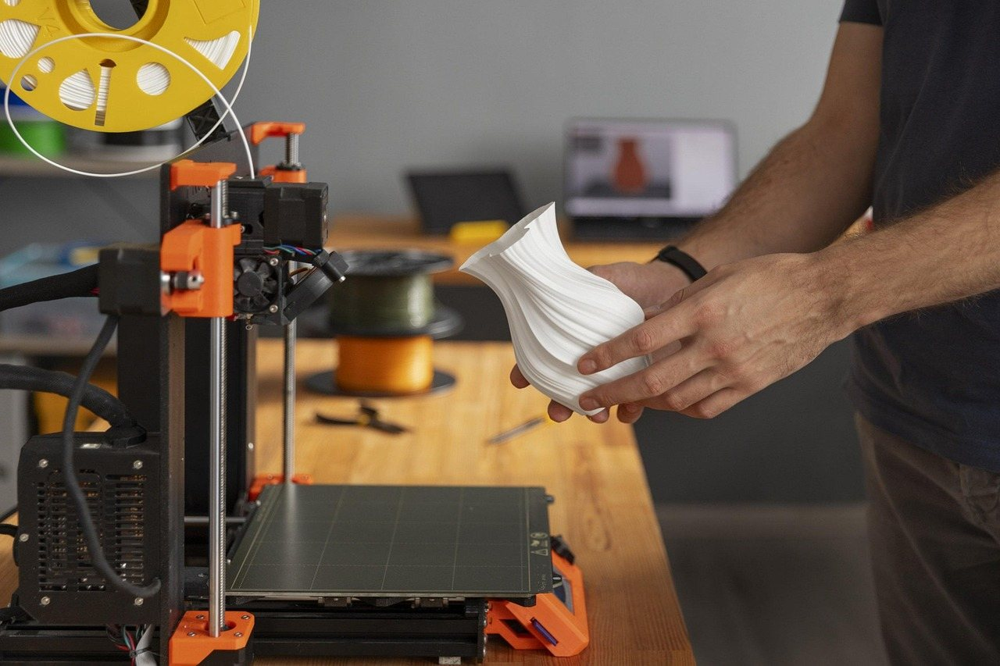

SI
Sciences de l'Ingénieur
Décoder le fonctionnement des systèmes techniques du quotidien : un vélo à assistance électrique, un robot, un objet connecté…
- Analyser
- Modéliser
- Simuler
- Programmer
Comprendre comment ça marche.


Institution Saint Jean · Douai
L'option SI / CIT en classe de seconde. 1 h 30 par semaine pour comprendre, imaginer et fabriquer.
Deux approches complémentaires
SI
Décoder le fonctionnement des systèmes techniques du quotidien : un vélo à assistance électrique, un robot, un objet connecté…
Comprendre comment ça marche.
CIT
Partir d'un besoin réel et imaginer une réponse : observer, explorer, concevoir, prototyper, tester… puis améliorer.
Inventer ce qui n'existe pas encore.
Deux entrées, une même démarche : celle de l'ingénieur.
Le format
Un temps dédié pour manipuler, tester, se tromper et recommencer. Loin d'un cours magistral.
On observe, on mesure et on confronte ses idées aux résultats.
On apprend en faisant : une équipe, un besoin, un prototype à concevoir.
Ni programmation, ni dessin technique : tout s'apprend dans le projet.
Un prototype qui rate, c'est une étape. On analyse, on corrige, on recommence.
Sciences de l'Ingénieur
01
On démonte, on observe, on mesure. On identifie la fonction de chaque pièce et les solutions techniques choisies par les concepteurs.
Exemple Pourquoi un robot aspirateur ralentit-il à l'approche d'un mur ?
02
On dessine la pièce, l'assemblage, le mécanisme. Le modèle numérique permet de vérifier les formes et de préparer la fabrication.
Exemple Modéliser le châssis d'un mini-robot pour l'adapter à un nouveau capteur.
03
On simule les efforts, les mouvements ou la consommation d'énergie. On anticipe les performances pour faire les bons choix.
Exemple Vérifier qu'une pièce résiste avant de l'envoyer à l'impression 3D.
04
Capteurs, actionneurs, code : on programme le comportement du système et on le fait interagir avec son environnement.
Exemple Programmer un capteur de distance couplé à un moteur pour éviter un obstacle.

Création et Innovation Technologique
Étape 01
Tout part d'une situation concrète : un objet qui n'existe pas, un usage à améliorer, un problème du quotidien. On observe les utilisateurs et on formule le besoin.
La question de départ : pour qui, et pour quoi faire ?
Étape 02
On compare les solutions déjà sur le marché, on mesure, on démonte. On repère ce qui fonctionne… et ce qui mérite d'être réinventé.
La question : comment font les autres ?
Étape 03
Croquis, nuages de mots, maquettes rapides : on ose, on compare, on sélectionne. La créativité se travaille, elle ne tombe pas du ciel.
La règle : beaucoup d'idées, puis un choix argumenté.
Étape 04
On dessine la solution en 3D, on choisit les matériaux et les composants, on vérifie les contraintes techniques, économiques et environnementales.
L'objectif : une solution réaliste, pas seulement séduisante.
Étape 05
Impression 3D, découpe, électronique : le prototype prend forme. On le teste, on note les écarts, on corrige. C'est ça, innover.
La devise : essayer, mesurer, recommencer.
Concrètement

SI + CIT
Capteurs, moteurs, programme : concevoir et régler un robot capable de suivre un parcours sans intervention.

CIT
Une boîte qui rappelle de boire, un support sur mesure, un capteur de qualité d'air : partir d'un usage réel.

SI + CIT
Réduire la matière, recycler, réparer : intégrer les contraintes environnementales dès la conception.
Exemples de projets possibles. Les photos sont des illustrations, pas des photos de l’établissement.
Le laboratoire
Un espace pour concevoir sur écran… et fabriquer avec ses mains. Les outils se découvrent au fil des projets.
Transformer un modèle numérique en objet réel, couche après couche. Idéal pour tester une forme rapidement.
Découper et graver des matériaux avec précision, à partir d'un dessin vectoriel préparé en CAO.
Brancher des capteurs et des actionneurs, puis écrire le programme qui donne vie au prototype.
Dessiner en 3D, assembler, simuler : le poste où l'idée devient un objet virtuel manipulable.
Selon les équipements et les projets de l'année.
Ce que tu développes
Bien au-delà de l'option : des gestes et des réflexes utiles dans toutes les spécialités, et dans la vie.
« On n'apprend pas la technologie en la regardant : on la pratique. »
Et après la seconde ?
L'option ne conditionne pas ton choix de spécialités. Elle t'aide surtout à te connaître et à choisir en connaissance de cause.
01
Mathématiques, physique-chimie, NSI, sciences de l'ingénieur… selon l'offre de ton établissement.
Pour approfondir l'analyse et le numérique.
02
La série STI2D prolonge naturellement la démarche : concevoir, expérimenter, innover.
Pour apprendre par la pratique et le projet.
03
BUT, BTS, écoles d'ingénieurs, classes préparatoires : les chemins sont nombreux et ouverts.
Un premier aperçu des métiers de l'ingénierie.
L'important n'est pas de tout décider en seconde — c'est d'essayer pour de vrai.
À toi de jouer
Quatre questions, zéro note. Clique sur la réponse qui te semble juste.
En pratique
Un enseignement optionnel, en plus des matières obligatoires.
Des projets et des travaux pratiques.
Le choix de l'option s'exprime lors de l'inscription en seconde.
La curiosité suffit : les outils s'apprennent dans le projet.
Institution Saint Jean · Douai
Sciences de l'Ingénieur & Création et Innovation Technologique — option de seconde.
Cultivons l'épanouissement
Sommaire
Aide
Sur tablette ou téléphone : balaie horizontalement pour changer de diapositive.